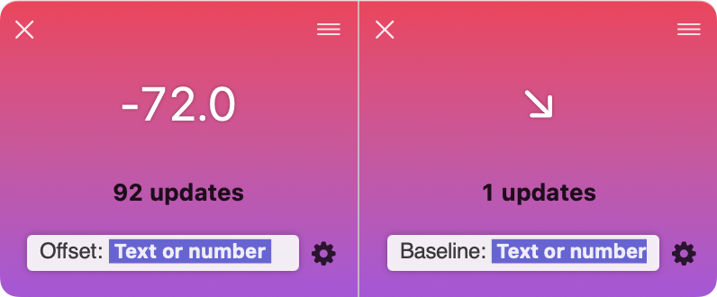

If you’re usually using print(...) in Swift to print debug info to the output console, it might be difficult to fight muscle memory and use os_log(...) instead.
Luckily, you can easily create a simple replacement for print() if you want to route some of that sweet, sweet debug info to the app logs and from there see them straight in dataTile!
Additionally, you might have some print statements sprinkled here and there and want to now capture them with dataTile…
Let’s have a look at a simple example of how to re-route that data to the logs:
import os
func print(_ text: some CustomStringConvertible) {
#if DEBUG
os_log("\(text.description, privacy: .public)")
#endif
}
Now we can easily print the offset of a table view and see some of the data in dataTile:
func onScroll(_ offset: CGFloat) {
print("Offset: \(offset)")
if offset >= 0 && lastOffset < 0 {
print("Baseline: ↗️")
}
if offset < 0 && lastOffset >= 0 {
print("Baseline: ↘️")
}
lastOffset = offset
}
And, given dataTile is configured to capture data separated by a colon, scrolling through the table will automatically pop some tiles on screen:
